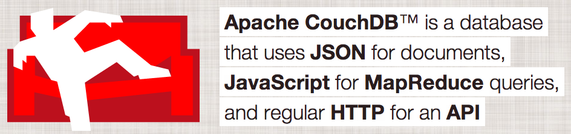
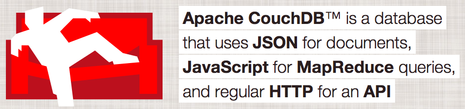

couchdb.apache.org says ...
... let's see!
couchdb.apache.org says ...
... let's see!
June 13, 2015 - OpenTechSchool Dortmund
CouchDB is built of the Web
http://kkovacs.eu/cassandra-vs-mongodb-vs-couchdb-vs-redis/
CouchDB, MongoDB, Terrastore, ThruDB, RavenDB, Riak, SisoDB, Amazon SimpleDB
| Language | Access | designed for | |
| CouchDB | Erlang | HTTP / REST | consistency, ease of use |
| Cassandra | Java | driver, thrift | Best of BigTable and Dynamo |
| MongoDB | C++ | driver | good parts of SQL |
| Neo4J | Java | REST / embedded | relations, search |
| riak | Erlang | REST / driver | Fault tolerance, tunable |
| redis | C | driver / TCP | speed |
MVCC - Multi Version Concurrency Control

ACID
CAP Theorem by Dr. Eric Brewer - approved by Seth Gilbert and Nancy Lynch
In CouchDB when used as distributed system: AP
Hello CouchDB:
curl -X GET http://localhost:5984
{"couchdb":"Welcome","uuid":"560d70bf76c74114fac7da97372ff88c","version":"1.6.1",
"vendor":{"version":"1.6.1-1","name":"Homebrew"}}
All DB's
curl -X GET http://localhost:5984/_all_dbs
["_replicator","_users"]
Create a DB
curl -X PUT http://localhost:5984/ots
{"ok":true}
curl -X GET http://localhost:5984/_all_dbs
["_replicator","_users","ots"]
Creating a document with POST
curl -X POST http://localhost:5984/jug/ -H "Content-Type: application/json" -d '{}'
{"ok":true,
"id":"9b56eaaca042487bf33c72b2f700094d",
"rev":"1-967a00dff5e02add41819138abb3284d"}
id
rev
Annotation
Creating a document with PUT with usage of a uuid ...
curl -X GET http://localhost:5984/_uuids
{"uuids":["9b56eaaca042487bf33c72b2f7001004"]}
curl -X PUT http://localhost:5984/ots/9b56eaaca042487bf33c72b2f7001004 -d '{}'
{"ok":true,
"id":"9b56eaaca042487bf33c72b2f7001004",
"rev":"1-967a00dff5e02add41819138abb3284d"}
... or with a own id
curl -X PUT http://localhost:5984/ots/first_doc -d '{}'
{"ok":true,"id":"first_doc","rev":"1-967a00dff5e02add41819138abb3284d"}
Annotation
Updating a document with PUT
curl -X PUT http://localhost:5984/ots/first_doc
-d '{"_rev":"1-967a00dff5e02add41819138abb3284d",
"some-content":"Hey how are you dude?"}'
{"ok":true,"id":"first_doc","rev":"2-65ef50076c98c6817fb3ca97c87d8b66"}
possible to use the if-match header
url -X PUT http://localhost:5984/ots/first_doc
-H "if-match:2-65ef50076c98c6817fb3ca97c87d8b66"
-d '{"some-content":"Hey how are you agin dude?"}'
{"ok":true,"id":"first_doc","rev":"3-a42ad7d14fdd29374bd3f285c4ea6d9f"}
Annotation
Difference between POST and PUT
Annotation
Deleting a document with DELETE
create second_doc
curl -X PUT http://localhost:5984/ots/second_doc -d '{}'
{"ok":true,"id":"second_doc","rev":"1-967a00dff5e02add41819138abb3284d"}
and delete it
curl -X DELETE http://localhost:5984/ots/second_doc?rev=1-967a00dff5e02add41819138abb3284d
{"ok":true,"id":"second_doc","rev":"2-eec205a9d413992850a6e32678485900"}
possible to use the if-match header
-H "if-match:1-967a00dff5e02add41819138abb3284d"
The document is not deleted physically but has a key _deleted: true
curl -X GET http://localhost:5984/jug/second_doc
{"error":"not_found","reason":"deleted"}
Please read the very important section about deleted documents in The CouchDB Documentation
You can retrieve a deleted document with this:
curl -X GET http://localhost:5984/ots/second_doc
?rev=2-eec205a9d413992850a6e32678485900 {"_id":"second_doc","_rev":"2-eec205a9d413992850a6e32678485900","_deleted":true}
More info can also be found in the CouchDB Documentation
Add attachment to document
curl -X PUT http://localhost:5984/ots/third_doc -d '{}'
{"ok":true,"id":"third_doc","rev":"1-967a00dff5e02add41819138abb3284d"}
curl -X PUT http://localhost:5984/ots/third_doc/mvcc.png
?rev=1-967a00dff5e02add41819138abb3284d
--data-binary @mvcc.png
-H "Content-Type: image/png"
{"ok":true,"id":"third_doc","rev":"2-7e10662ef82e548bafd9bc078430669a"}
Receive attachment from document
curl -i http://localhost:5984/ots/third_doc/
HTTP/1.1 200 OK
Server: CouchDB/1.6.1 (Erlang OTP/17)
ETag: "2-7e10662ef82e548bafd9bc078430669a"
Date: Wed, 10 Jun 2015 19:55:32 GMT
Content-Type: text/plain; charset=utf-8
Content-Length: 199
Cache-Control: must-revalidate
{"_id":"third_doc","_rev":"2-7e10662ef82e548bafd9bc078430669a",
"_attachments":
{"mvcc.png":
{"content_type":"image/png",
"revpos":2,
"digest":"md5-RJsN7gjQubg+iqLe96+SxQ==",
"length":12753,
"stub":true
}
}
}
Im Browser: http://localhost:5984/ots/third_doc/mvcc.png
Copy the documents
Create two documents
curl -i -X PUT http://localhost:5984/ots/fourth_doc -d '{"first_name": "Andy"}'
{"ok":true,"id":"fourth_doc","rev":"1-16e80e6f62d44c4569d13e2e7a05e373"}
curl -X PUT http://localhost:5984/ots/fifth_doc -d '{"last_name": "Wenk"}'
{"ok":true,"id":"fifth_doc","rev":"1-18236196ad905238b2b24d33a12eb043"}
Copying fourth_doc to fifth_doc is overwriting not merging!
curl -X COPY http://localhost:5984/ots/fourth_doc
-H 'destination:fifth_doc?rev=1-18236196ad905238b2b24d33a12eb043'
{"ok":true,"id":"fifth_doc","rev":"2-21431c6bda57d30383987ae2510c309e"}
curl http:://localhost:5984/ots/fifth_doc
{"_id":"fifth_doc","_rev":"2-21431c6bda57d30383987ae2510c309e","first_name":"Andy"}
Copying fourth_doc to sixth_doc will create the fixh_doc newly
curl -X COPY http://localhost:5984/ots/fourth_doc -H 'destination:sixth_doc'
{"ok":true,"id":"sixth_doc","rev":"1-993591377f6cb544ddea933a6ed28e38"}
curl http://localhost:5984/ots/sixth_doc
{"_id":"sixth_doc","_rev":"1-993591377f6cb544ddea933a6ed28e38","first_name":"Andy"}
Get all documents
curl -X GET http://localhost:5984/ots/_all_docs
{"total_rows":11,"offset":0,"rows":[
{"id":"7890ea3e62d9d5c35e395670a9001738","key":"7890ea3e62d9d5c35e395670a9001738","value":{"rev":"2-3899b298da77f4c44d7c57cee30628b9"}},
{"id":"7890ea3e62d9d5c35e395670a9001b04","key":"7890ea3e62d9d5c35e395670a9001b04","value":{"rev":"1-1ad9f7e7c5f932d670a24a01400d12b7"}},
{"id":"9b56eaaca042487bf33c72b2f700094d","key":"9b56eaaca042487bf33c72b2f700094d","value":{"rev":"1-967a00dff5e02add41819138abb3284d"}},
{"id":"9b56eaaca042487bf33c72b2f7001004","key":"9b56eaaca042487bf33c72b2f7001004","value":{"rev":"1-967a00dff5e02add41819138abb3284d"}},
{"id":"_design/ots","key":"_design/ots","value":{"rev":"8-2fa6a96e7687f1fd747d3562eb20f658"}},
{"id":"fifth_doc","key":"fifth_doc","value":{"rev":"2-21431c6bda57d30383987ae2510c309e"}},
{"id":"first_doc","key":"first_doc","value":{"rev":"3-a42ad7d14fdd29374bd3f285c4ea6d9f"}},
{"id":"fourth_doc","key":"fourth_doc","value":{"rev":"2-7945e901ae6b9d19a2cf4b0da40a1a5c"}},
{"id":"second_doc","key":"second_doc","value":{"rev":"3-bc27b6930ca514527d8954c7c43e6a09"}},
{"id":"sixth_doc","key":"sixth_doc","value":{"rev":"1-993591377f6cb544ddea933a6ed28e38"}},
{"id":"third_doc","key":"third_doc","value":{"rev":"2-7e10662ef82e548bafd9bc078430669a"}}
]}
Check also:
Invented by Google
some documents with structure
{
"_id": "f165fc62ed5d14ca84128de1d6034a36",
"_rev": "1-357fda3050771ca747b95c0108a21fe6",
"type": "document_store",
"name": "CouchDB"
}
simplest possible view
{
"_id": "_design/simple",
"_rev": "2-0404067f53ecc72bc660b8bed7576604",
"views": {
"all_database_types": {
"map": "function (doc) { emit(doc.type, doc.name); }"
}
}
}
firing the view
curl -X GET 'http://localhost:5984/map-reduce/_design/simple/ \
_view/all_database_types'
{"total_rows":12,"offset":0,"rows":[
{"id":"f165fc62ed5d14ca84128de1d6036c8c","key":"column_store","value":"BigTable"},
{"id":"f165fc62ed5d14ca84128de1d60375a4","key":"column_store","value":"Hadoop"},
{"id":"f165fc62ed5d14ca84128de1d6037f0e","key":"column_store","value":"Cassandra"},
{"id":"f165fc62ed5d14ca84128de1d6038002","key":"column_store","value":"HBase"},
{"id":"f165fc62ed5d14ca84128de1d6034a36","key":"document_store","value":"CouchDB"},
{"id":"f165fc62ed5d14ca84128de1d6035544","key":"document_store","value":"MongoDB"},
{"id":"f165fc62ed5d14ca84128de1d60358c0","key":"document_store","value":"Riak"},
{"id":"f165fc62ed5d14ca84128de1d60367ac","key":"document_store","value":"Amazon SimpleDB"},
{"id":"f165fc62ed5d14ca84128de1d60387fb","key":"key_value","value":"couchbase"},
{"id":"f165fc62ed5d14ca84128de1d6038f3f","key":"key_value","value":"redis"},
{"id":"f165fc62ed5d14ca84128de1d6039f11","key":"key_value","value":"berkley DB"},
{"id":"f165fc62ed5d14ca84128de1d603a8b6","key":"key_value","value":"Raptor DB"}
]}
attention: start using single quotes for the URL - otherwise cURL will fuck up!
firing the view and receive only data for type=column_store
curl -X GET 'http://localhost:5984/map-reduce/_design/simple/ \
_view/all_database_types?key="document_store"'
{"total_rows":12,"offset":4,"rows":[
{"id":"f165fc62ed5d14ca84128de1d6034a36","key":"document_store","value":"CouchDB"},
{"id":"f165fc62ed5d14ca84128de1d6035544","key":"document_store","value":"MongoDB"},
{"id":"f165fc62ed5d14ca84128de1d60358c0","key":"document_store","value":"Riak"},
{"id":"f165fc62ed5d14ca84128de1d60367ac","key":"document_store","value":"Amazon SimpleDB"}
]}
extending the view with a reduce function
{
"_id": "_design/simple",
"_rev": "2-0404067f53ecc72bc660b8bed7576604",
"views": {
"all_database_types": {
"map": "function (doc) { emit(doc.type, doc.name); }"
"reduce": "_count"
}
}
}
curl -X GET 'http://localhost:5984/map-reduce/_design/simple/ \
_view/all_database_types?group=true'
{"rows":[
{"key":"column_store","value":4},
{"key":"document_store","value":4},
{"key":"key_value","value":4}
]}
If you want to fire the view without reduce, use the parameter reduce=false
See also: